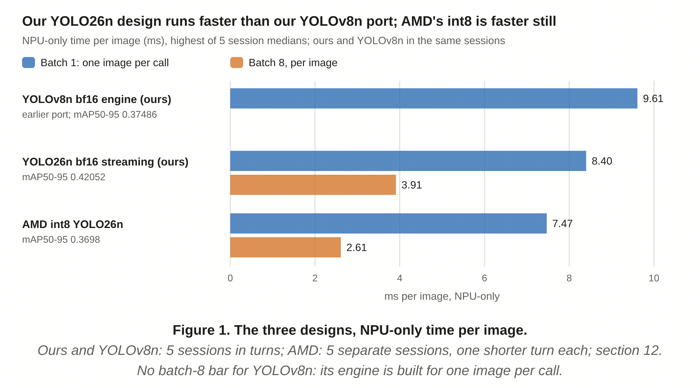
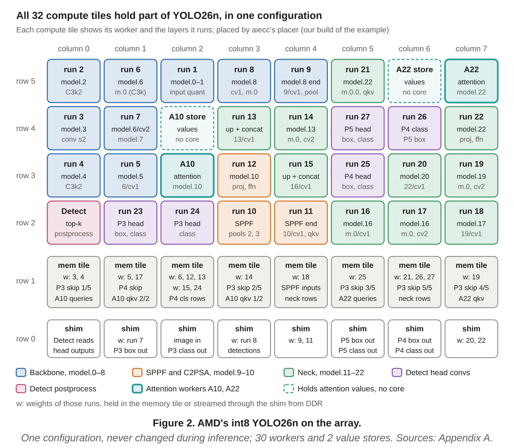
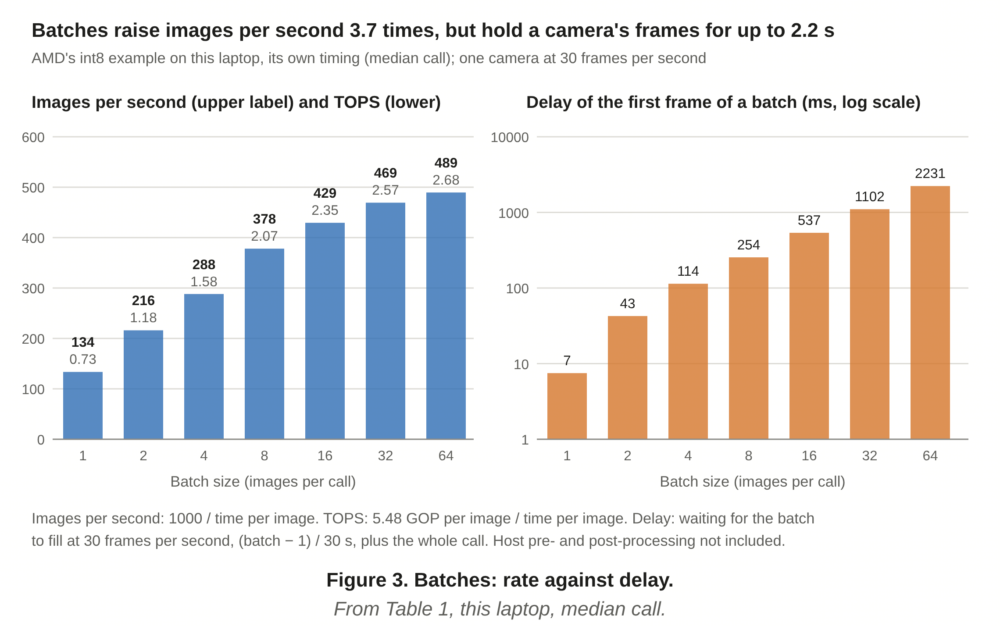
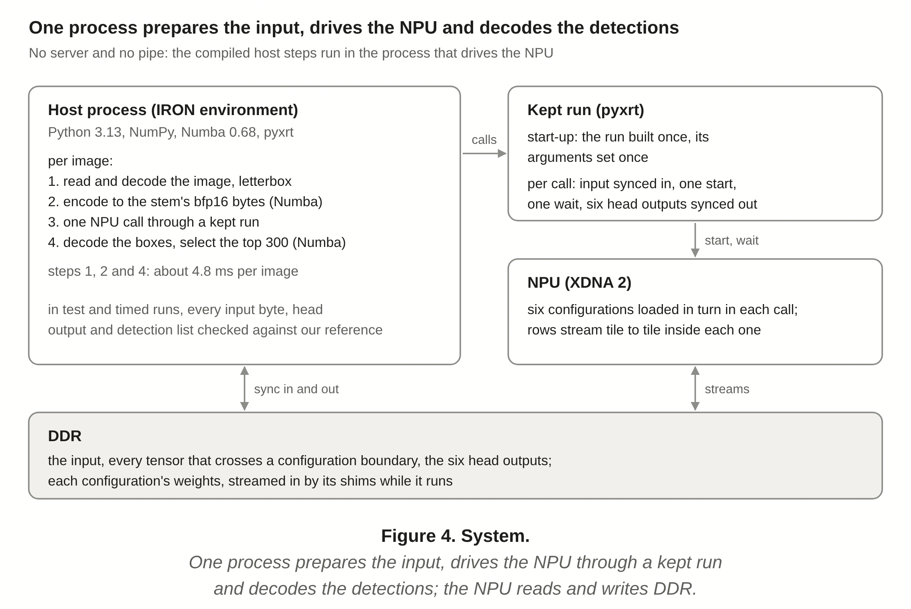
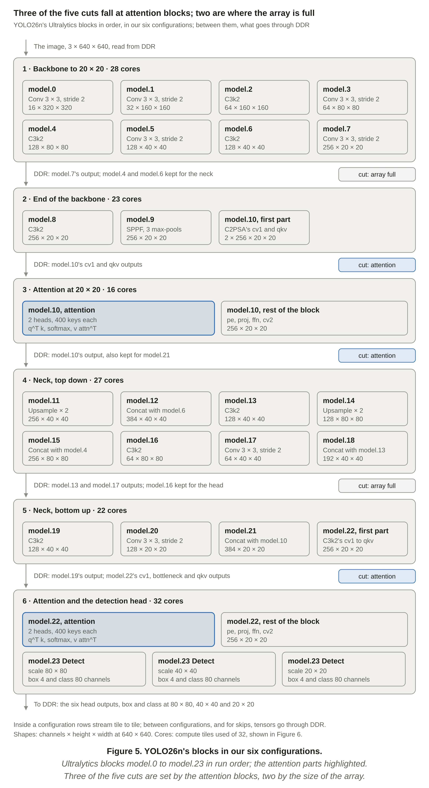
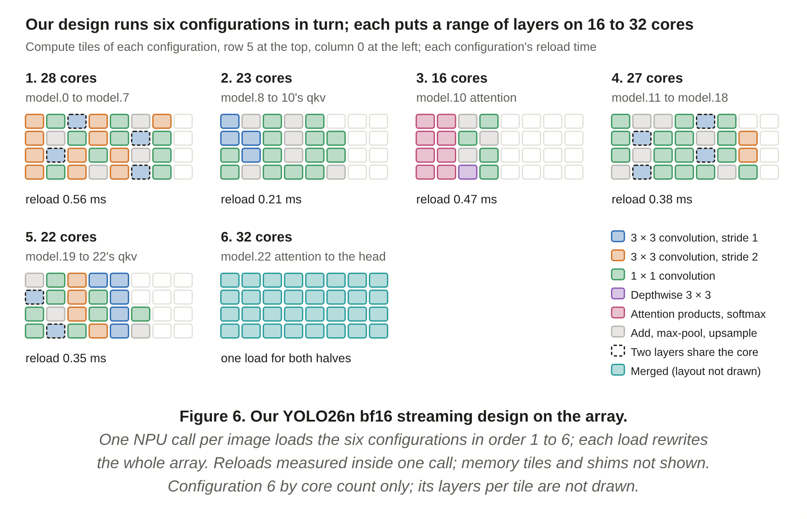
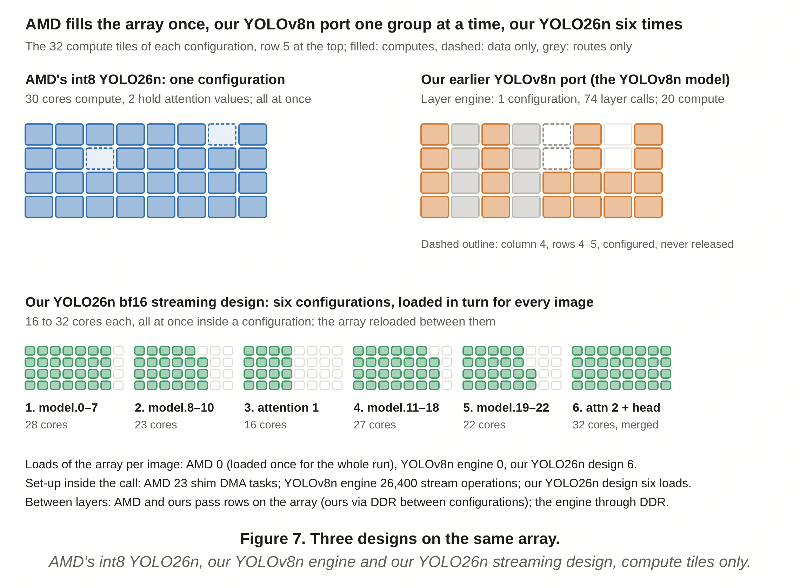
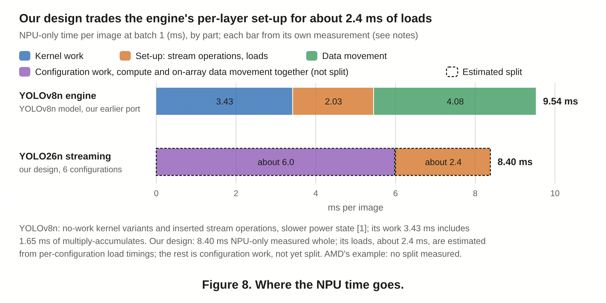

YOLO26n on the AMD XDNA 2 NPU through IRON: a bf16 port compared with AMD's int8 design
Date: 16-11-2026, Version: 1.27 (DRAFT), Last edit time: 14:50 AEDT, 20-11-2026
Author: Denis Ryndine: project direction, hardware runs, measurements, interpretation
Assistant: Claude (Anthropic), model claude-opus-5-5: report drafting and drawings from the project's measurements, under the author's direction
Abstract
We ported YOLO26n (640 × 640, Ultralytics' pretrained model, not retrained) to the AMD XDNA 2 NPU of a laptop, with IRON and MLIR-AIE, in bf16 stored as bfp16 blocks, and compared it with AMD's int8 YOLO26n design from the MLIR-AIE repository, which we rebuilt and whose published speed we confirmed on this laptop. AMD's design streams the whole network through all 32 compute tiles in one array configuration; in bf16 that layout does not fit, and our YOLOv8n layer engine ran YOLO26n at about 1.8 times YOLOv8n's time. Our new YOLO26n design instead streams in six configurations, three of its five boundaries set by the attention blocks and two by the array's size, all loaded in one NPU call per image. Its outputs match our bf16 reference byte for byte, with mAP50-95 0.42052 on a 500-image COCO subset against the int8 design's 0.3698. At batch 1 it takes 8.40 ms of NPU time per image, against 9.61 ms for our YOLOv8n port in the same sessions, and 7.47 ms for AMD's int8 design, timed separately. Of our 8.40 ms, loading the six configurations takes about 2.4 ms (estimate), more than the gap to AMD's design. At batch 8 it takes 3.91 ms per image, against AMD's 2.61 ms; our YOLOv8n port runs one image per call only. With the host's steps compiled to native code, an image takes 13.51 ms end to end, 74 images per second, against 15.58 ms for YOLOv8n.
Contents
List of figures
List of tables
Table 1. AMD's int8 YOLO26n example: time per image, published and on this laptop7
Table 2. Delay from frame capture to detections, AMD's int8 example10
Summary
This report describes our port of YOLO26n object detection to the AMD XDNA 2 NPU of a Windows laptop, written with IRON and MLIR-AIE in bf16, and compares it with AMD's own int8 YOLO26n design from the MLIR-AIE repository. We first rebuilt AMD's design and confirmed its published speed on this laptop. It runs the whole network as one streaming pipeline on all 32 compute tiles, in one configuration and one call; it reaches its full rate, 2.7 TOPS, only with batches of images, which for a single camera add up to 2.2 s of delay.
In bf16 that layout does not fit: the data is 12.5 % larger and the int8 layout already fills the array. Our YOLOv8n layer engine ran YOLO26n exactly but at about 1.8 times YOLOv8n's time. Our design therefore streams in six array configurations, with boundaries at the attention blocks, which cannot stream their rows, and two more where the array is full; one call per image loads the configurations in turn.
Our design reproduces our bf16 reference exactly (71,947 of 71,947 detections on a 500-image COCO subset, mAP50-95 0.42052) and is faster than our YOLOv8n port: 8.40 ms NPU-only per image at batch 1, against 9.61 ms in the same sessions, lower in every session. With the host's steps compiled to native code, an image takes 13.51 ms end to end, 74 images per second, against 15.58 ms for YOLOv8n. AMD's int8 design is faster, 7.47 ms at batch 1 and 2.61 ms per image at batch 8 against our 3.91 ms, and less accurate (0.3698). Loading the six configurations, about 2.4 ms per image (estimate), is more than the gap to AMD at batch 1.

Key findings (section 13):
AMD's int8 YOLO26n reproduces here, and its full rate needs batches that a single camera does not provide.
bf16 does not fit AMD's layout; a single bf16 configuration failed the capacity checks on 16 to 20 tiles.
Attention blocks force configuration boundaries in a bf16 streaming design; YOLOv8n has none.
Our streaming design: YOLO26n exact, faster than our YOLOv8n port, 0.05072 mAP above the int8 design; its loads are its largest overhead.
1. Introduction
1.1 Purpose and scope
The aim was to run YOLO26n, Ultralytics' newest small detector [2], on the AMD XDNA 2 NPU of a Windows laptop through IRON and MLIR-AIE, in the same bf16 number format as our YOLOv8n port, and to compare the result with the int8 YOLO26n design that AMD published in the MLIR-AIE repository. The report gives the designs as built and their measured results.
1.2 Starting point
Two earlier pieces of work are the basis. Our YOLOv8n port [1] runs YOLOv8n in bf16 as a layer engine: one fixed array configuration, the network as a chain of layer calls in one NPU call, every tensor through DDR. It matches its frozen bf16 reference byte for byte. AMD's YOLO26n example [3] runs the whole of YOLO26n in int8 as one streaming pipeline on all 32 compute tiles. This work started from AMD's example: we built it, ran it and checked its published results before designing our own (section 3).
1.3 What "bf16" means here
As in the YOLOv8n port, weights and every tensor between layers are stored and multiplied as bfp16 blocks (8 values sharing one exponent, 9 bytes per block), accumulated and finished in float32, and rounded through bf16 back to bfp16. Every comparison with AMD's example is therefore between two number formats, this bf16 family against int8, and is stated as such.
1.4 The model
YOLO26n needs 2.74 billion multiply-accumulates per 640 × 640 image (5.4 GFLOPs as Ultralytics gives it), 37 % fewer than YOLOv8n's 4.37 billion (8.7 GFLOPs), but, as our ports divide them for the NPU, about twice as many layer calls: 160 against 74 on our YOLOv8n engine (section 7). It adds three kinds of work YOLOv8n does not have: depthwise convolutions, two attention blocks (model.10 and model.22, each with products between two activation tensors and a softmax over 400 key positions), and a head with no NMS. The attention blocks matter most for the design: every key row is needed before the first query can be answered, so rows cannot simply stream through them (section 9).
2. Set-up and method
2.1 Hardware and software
| Item | Value |
|---|---|
| Laptop | Lenovo ThinkPad (machine type 21RV), 64 GB memory |
| Processor | AMD Ryzen AI 9 HX PRO 370 (Strix Point) |
| NPU | AMD XDNA 2: 32 compute tiles (8 columns × 4 rows), 8 memory tiles, 8 shim tiles; rated 50 TOPS in int8 |
| Operating system | Windows 11 Pro 25H2, build 26200 |
| NPU driver | 32.0.20101.3760 |
| NPU firmware | 1.1.2.64 |
| XRT | 2.21.0 |
| MLIR-AIE and IRON | mlir-aie commit 6a97402957c (Python wheel 1.4.6.dev3), dated 04-11-2026 |
| Peano (llvm-aie) compiler | 22.0.0.2026102001 |
| Host software | Python 3.13.14, NumPy 2.5.4, OpenCV 5.0.0.93 |
| Host code compiler | Numba 0.68.0, with llvmlite 0.50.0 |
| Accuracy evaluation | Python 3.12.13, pycocotools 2.0.11 |
| Power setting while timing | NPU power mode performance (set with xrt-smi and confirmed before each session), Default restored after |
2.2 Host code
The host's own steps run as native code compiled by Numba (versions in 2.1), set as follows.
| Setting | Value |
|---|---|
| Compilation | At start-up, in an untimed warm-up; kept in Numba's on-disk cache |
| Threading layer | Numba's workqueue, whose threads do not spin between parallel steps (with Numba's default, OpenMP, the next single-threaded step ran 49 % slower in our YOLOv8n port) |
| Threads | At most 8 |
2.3 Timing
Three spans are timed. NPU-only runs from the host issuing the NPU call to the host returning from its wait; the round trip runs from the input ready in the program's memory to the outputs readable there; end to end runs from the image file to the detections, with all host work included.
Same sessions. Our YOLO26n design and our YOLOv8n port were timed in the same five sessions, run one after another (about 11 minutes each) with the laptop otherwise idle.
Turns. Within a session the designs run in turns, in an order rotated from session to session; the batch-8 turns (our YOLO26n design only, since our YOLOv8n port has no batch mode) and the end-to-end turns follow the batch-1 turns.
A turn. A 30-second rest with nothing running, a new process, the design loaded, its first call and 25 warm-up calls (5 inferences end to end) set aside, then 30 seconds of timed calls, every output checked against the reference.
Reported figure. A turn gives the median of its calls, and a session the median of its turns of each kind. Every reported time is the highest of the five session medians: a pessimistic figure.
Conditions. The CPU load and the processor clock were recorded for every turn: 1.3–1.7 % and 1.67–1.75 GHz.
AMD's example was timed on another day, in five separate sessions 20 minutes apart, with one turn per session of the same kind but with 20 seconds of timed calls. Designs are compared directly only within the same sessions.
2.4 Reproducing AMD's published times
Table 1 reproduces AMD's published times in AMD's own form: the example's own benchmark code, giving the fastest and the median of 20 calls after 10 warm-up calls, divided by the batch size.
2.5 Accuracy
Accuracy is mAP50-95 (and mAP50) on a fixed 500-image COCO subset [5], scored with pycocotools. Our design is exact when every detection is byte-identical to our frozen bf16 reference, a CPU model of YOLO26n that uses the NPU's own arithmetic.
2.6 Rounding
Times we measured, for all three designs including AMD's example on this laptop, are rounded to 0.01 ms, with halves rounded up; differences, ratios and percentages are computed before rounding. Figures quoted from AMD's publication (Table 1, "Published" columns) are given as AMD published them. mAP values are given as measured, not rounded.
2.7 AMD's example: the version used
All results for AMD's example come from mlir-aie commit 6a97402957c (04-11-2026), built unchanged; the latest release tag at that time, v1.4.5 (03-11-2026), is older. As of 20-11-2026, the repository's main branch is at commit 0f76700, 60 commits later. One of them, pull request #4003 (19-11-2026), changes the YOLO26n example: its build no longer sets the placer's effort (--sa-effort=3 removed), and its design joins some held inputs that come from one memory tile into a single stream. We have not built, run or profiled that version; its placement (Figure 2) and its times may differ from those reported here.
3. AMD's int8 YOLO26n, reproduced on this laptop
We started from AMD's int8 YOLO26n example in the MLIR-AIE repository (programming_examples/ml/yolo26n, added by pull request #3962), at mlir-aie commit 6a97402957c (04-11-2026) with llvm-aie 22.0.0.2026102001. We built it locally, unchanged, in its own toolchain environment, and re-ran its tests: the NPU's detections equal the example's integer reference on all 128 of its test images (coco128). Its timing on this laptop agrees with AMD's published figures: at the fastest call within 0.3 % at batch 1 and within 1.5 % at batches 2, 8 and 16, at most 4.4 % slower (batch 4); at the median call 1.0–6.5 % slower (Table 1). We therefore confirm AMD's reported speed, to within a few percent, on this laptop's Strix Point NPU.
| Batch size (images per call) | Published, fastest call (ms per image) | This laptop, fastest call (ms per image) | Published, median call (ms per image) | This laptop, median call (ms per image) |
|---|---|---|---|---|
| 1 | 6.83 | 6.82 | 7.24 | 7.49 |
| 2 | 4.29 | 4.30 | 4.48 | 4.63 |
| 4 | 3.12 | 3.26 | 3.26 | 3.47 |
| 8 | 2.58 | 2.55 | 2.62 | 2.64 |
| 16 | 2.27 | 2.30 | 2.30 | 2.33 |
| 32 | not published | 2.11 | not published | 2.13 |
| 64 | not published | 2.03 | not published | 2.04 |
Table 1. AMD's int8 YOLO26n example: time per image (ms), published and on this laptop. Both measured by the example's own benchmark code: the host's time of the whole call divided by the batch. Published: Strix Halo, README at 5e5e3bb6801. This laptop: Strix Point.
Accuracy. On our 500-image COCO [5] subset, with our evaluation, the example's int8 output scores mAP50-95 0.3698 (mAP50 0.5300). Its own FP32 ONNX model scores 0.4228 and our FP32 export 0.4227, so int8 costs 0.0529 here. The example's scores come from a sigmoid table on int8 logits with only 61 distinct values, so ties are common.
Measured with our benchmark program. For the comparisons in sections 11 and 12 the example was also timed with our benchmark program: 7.47 ms NPU-only and 8.41 ms round trip at batch 1. That NPU-only figure counts from the call's submission to its completion as seen by the host, so it includes the call's dispatch, which the example's own NPU figure leaves out; the round trip includes 0.79 ms per call that IRON spends re-arming the run's arguments (section 12).
4. AMD's design: one configuration, a streaming pipeline
AMD's example places the whole of YOLO26n on the array at once, in one configuration that is loaded once and never changed during inference (Figure 2; Appendix A gives how it was drawn). It is a streaming design: each compute tile runs one fused run of consecutive layers as a loop that never ends, and rows pass from tile to tile on the array.

All layers on the tiles. 30 workers each hold one fused run (27 runs of layers, the two attention blocks, and the Detect post-processing); two more compute tiles run no core and only store the attention values, which do not fit beside the attention worker (76,800 bytes against a tile's 65,536). So all 32 compute tiles, all 8 memory tiles and all 8 shims are in use. No layer runs anywhere else.
Activations stay on the array. A row is handed to the next worker over shared memory between neighbouring tiles (15 links), by DMA tile to tile (10 links), or through rows held in memory tiles when the reader lags behind (skip connections; the P3 skip is held in five stages over five memory tiles). Only the six head outputs leave the array: 739,200 bytes per image go to DDR and are read back by the Detect worker.
Weights are in three places. Where they fit beside a worker's rows, they stay in its tile (62,704 bytes over all tiles). Otherwise they stream in a chunk of output channels at a time: 16 runs replay them from memory tiles (1.19 MB resident), and the six runs with the widest convolutions stream them from DDR (1.86 MB), re-read once per output row, which makes 38.6 MB read from DDR per image.
Placed by the compiler. The design names no tile: every worker is AnyComputeTile and every memory-tile buffer AnyMemTile, and aiecc's simulated-annealing placer chose every position (959 s of the 985 s build). The placer keeps producer and reader pairs that share memory side by side as a hard constraint, which is why the network does not run column by column.
A tight fit. In int8 the layout leaves little room: 14 of the 30 cores have less than 4 KB of data memory free (run 2 has 32 bytes left), the memory tiles are 87 % full (one has 1 KB left), and the largest core program uses 14,896 of 16,384 bytes.
One call, one configuration, end to end. The host makes one NPU call per batch of 1 to 64 images. The call's instruction stream holds only 23 shim DMA tasks for batch 1: the input fill, the six weight streams, the head outputs and the detections. There is no per-layer set-up and no reconfiguration inside the call: every in-array transfer is fixed in the configuration, and rows pace themselves through the locks of their data paths. A design that loads a new configuration, or sets up each layer's transfers, inside an inference pays for it in time (sections 7 and 9); this one pays neither.
A streaming design. The FPGA literature distinguishes two ways to map a detector onto hardware [4]: a single compute engine that a controller schedules layer by layer, and a streaming architecture with a dedicated pipeline stage per layer or group of layers. AMD's example is the second kind. Our YOLOv8n port is the first (section 7). A streaming design keeps every stage busy only while the pipeline is full: at batch 1 it is filled and drained once for a single image. We built AMD's example from its source with AMD's open-source mlir-aie toolchain and traced it at batch 1, on 22 of its 30 cores (row 2 could not be traced): each traced tile is idle for 69–97 % of the image, and the busiest, the A22 attention worker, computes for 1.91 ms of a traced span of 6.17 ms. The full use of the array comes with batches (section 5).
5. Batches: images per second against the delay of each image
AMD's design reaches its highest rate only with several images in one call. Inside a call the images follow each other through the pipeline, so while one image is in the head the next ones are already in the backbone, and every worker is busy on some image. One build holds seven entries, for batches of 1, 2, 4, 8, 16, 32 and 64 images, each with its own instruction stream; the host picks one per call. Each call still ends with the pipeline empty, so a batch of 1 pays the pipeline's fill and drain for a single image, and a batch of 64 shares them over 64.

Rate. From batch 1 to batch 64 the time per image falls from 7.49 to 2.04 ms (the median call of AMD's own timing; section 12 gives 7.47 ms NPU-only at batch 1), and the rate rises from 134 to 490 images per second, 0.73 to 2.68 TOPS (5.4 % of the NPU's rated 50 TOPS in int8). Batch 64 is the largest the build provides and the fastest measured. Larger batches would add little: worked out from Table 1's batch 32 and 64 rows, each extra image cost 1.96 ms, so the rate cannot exceed about 510 images per second (2.8 TOPS) however large the batch (estimate, assuming each extra image keeps costing the same); batch 64 is within about 4 % of that.
Delay. A batch waits until all its images are there. From one camera at 30 frames per second, a batch of 64 needs 2.1 s of frames before the call starts, and the call itself takes 131 ms: the first frame's detections come 2.2 s after it was captured (Figure 3). For one camera, batching gives nothing that is needed: at batch 1 the example already handles 134 images per second, more than four times the camera's 30. Batches help when frames from several cameras arrive together:
| Set-up | Batch | First frame of the call, delay (ms) | Last frame of the call, delay (ms) |
|---|---|---|---|
| 1 camera, one frame per call | 1 | 7.5 | 7.5 |
| 1 camera, 8 frames per call | 8 | 254 | 21.2 |
| 1 camera, 64 frames per call | 64 | 2,231 | 131 |
| 8 cameras, one frame from each per call | 8 | 21.2 | 21.2 |
Table 2. Delay from frame capture to detections, AMD's int8 example (ms). Cameras at 30 frames per second; computed from Table 1's median calls; the NPU call only, without host pre- and post-processing.
With 8 cameras the call (21.2 ms) ends before the next frames arrive (33.3 ms), so all 8 are served at their full rate with a delay of 21 ms. With 16 cameras a batch-16 call takes 37.3 ms, longer than the 33.3 ms between frames, so the cameras cannot all be served at 30 frames per second; about 14 is the limit at this rate (429 images per second at batch 16).
What this means for comparison. The array's full rate and the delay of one image are two different figures, and a design is chosen for one of them. This report compares designs on one image per call (batch 1), the case for a single camera, and gives batch 8 beside it as the multi-camera case (section 12).
6. Why the int8 layout does not carry over to bf16
AMD's layout is a tight fit in int8, and bf16 data is larger. We did not build a bf16 copy of AMD's layout: we were not copying its design, and a single bf16 configuration does not pass the capacity checks that come before placement. The numbers below show why a direct copy would not fit either.
The data is 12.5 % larger. A bfp16 block holds 8 values in 9 bytes, against 8 bytes in int8, so every activation row, every held skip row and every weight chunk is 9/8 the size. Applied to AMD's layout as built (an estimate: every buffer scaled by 9/8, nothing else changed):
the 14 cores with less than 4 KB of data memory free (of 64 KB) would each need more than 64 KB;
memory tile (1,1), at 523,264 of 524,288 bytes in int8, would need about 589,000 bytes;
the eight memory tiles together would be at 98 % of their 4 MB, with no tile able to take another's overflow without new routes and channels.
The arithmetic needs more room too. In int8 AMD's SiLU is a 256-byte table per convolution. Our bf16 kernels accumulate and finish in float32, and our reference fixes an exact softmax (a Q30 exponential table, an exact 64-bit sum, exact rounding to bf16) so that every tile split gives the same bytes: the softmax kernel alone takes 6,560 bytes of program memory and 55,808 bytes of data memory on its tile.
What the capacity checks found. Two bf16 layouts for the whole network were checked:
One configuration: 20 of the 32 compute tiles over 64 KB of data memory. After every remedy that keeps the reference's values (rows without width padding, smaller weight chunks, row-streaming windows, a fused attention group, skips parked in DDR), 16 tiles were still over 64 KB.
Fused blocks in seven configurations: four of whose blocks did not fit data memory.
Two further limits: model.10 to model.18 in one configuration needed 35 tiles, and a configuration that spans an attention block must hold whole tensors that need 46–48 memory-tile buffer descriptors against 24 per channel half (section 9).
Placement was not the limit. The layouts above failed the generator's capacity checks, before any placement. aiecc's placer, the one AMD's example uses, placed and routed two of our configurations (27 and 28 cores) in about 4–4.5 minutes, and they ran within 0.01 ms of our own placement.
7. YOLO26n on a layer engine
We also ran YOLO26n on our YOLOv8n layer engine [1]. The engine has one fixed configuration, runs the network one layer call at a time on fixed tile groups, and sends every tensor through DDR. The port was exact, with every detection identical to our bf16 reference, but slow: 17.29 ms of NPU time per image, about 1.8 times YOLOv8n's time on the same engine, timed side by side. The engine's cost is per layer call: it sets up each layer's transfers and moves its tensors through DDR. On our engine YOLO26n takes about twice as many layer calls as YOLOv8n (160 for its 143 operations, against 74), many of them small, although the model has fewer multiply-accumulates; so the engine's overhead grows to the size of its kernel work. A layer engine is therefore not the design for YOLO26n.
8. Goals of the bf16 design
The new design was to take as much of AMD's streaming approach as bf16 allows, while keeping our own priorities:
Exact. Every output byte-identical to our frozen bf16 reference, as in the YOLOv8n port.
One image at a time, lowest delay. The target is a single camera in real time: one image per call, its detections as soon as possible. Batching and a pipeline shared by several images were not objectives. For one camera they only add delay (section 5: 2.2 s at batch 64), and one image per call already serves far more than 30 frames per second. For several cameras whose frames arrive together, a batch made of one frame from each camera adds no waiting; that case is measured at batch 8 beside the main figure, not designed for.
Streaming where it fits. Consecutive layers on their own tiles, rows passed from tile to tile on the array, as much of the network on the array at once as fits, and as many of the 32 tiles working at once as possible.
Faster than our YOLOv8n port at batch 1, timed in the same sessions.
9. The bf16 design: streaming in six configurations
Since the whole network does not fit the array in bf16, our design divides it into six configurations, each a streaming design for a range of consecutive layers (Figures 5 and 6). Inside a configuration it works as AMD's design does: every layer, or a share of a wide layer, has its own core, rows pass from tile to tile on the array, and all the cores work at once on different rows. Between configurations the tensors that the next range needs go to DDR, and the next configuration reads them after it is loaded.
Figure 4 shows the system around it: one process prepares the input, drives the NPU and decodes the detections. Unlike our YOLOv8n port, there is no separate server process, pipe or memory-mapped file, because the compiled host steps run in the process that drives the NPU.

Figure 5 draws YOLO26n's Ultralytics blocks, in run order, in the six configurations, with what goes through DDR at each cut. Three of the five cuts are set by the attention blocks; the other two fall where the layers no longer fit the array's 32 cores. Figure 6 shows the same six configurations on the array's tiles.


Tiles used. Each configuration uses 16 to 32 of the 32 compute tiles (model.0–7: 28; model.8 to 10's qkv: 23; the first attention block: 16; model.11–18: 27; model.19 to 22's qkv: 22; the second attention block with the head: 32). Where two small layers fit one core, they share it, run in turn per row; the last configuration fits 32 cores because a 1 × 1 convolution can share a core with a depthwise one, and a 3 × 3 with the box output. Weights are streamed from DDR and replayed by the memory tiles, so the configurations carry no weights and load faster (0.27 ms, against about 1.00 ms with the weights inside the configuration).
One call per image, six loads inside it. The host makes one NPU call per image, as for AMD's design. Inside that call the array is loaded six times: a load writes the whole array (a blank configuration, then every register), and the first configuration is loaded again at the start of every call. The loads take 0.21–0.56 ms each, about 2.4 ms per image in all (estimate), more than a quarter of the NPU time (section 11). This is the overhead that AMD's single configuration does not have. No tile keeps the same program between two consecutive configurations, and neither the toolchain nor the runtime offers a partial load, so a load cannot be made smaller; the way to reduce it is fewer configurations.
Why the attention blocks set the boundaries. In a streaming design a layer starts as soon as the rows it needs have arrived. Attention breaks this: every key row is needed before the first query can be answered, so all rows before the block, and every tensor that passes the block on a skip connection, must be held whole. Holding them on the array needs 46–48 memory-tile buffer descriptors against 24 per channel half. Our design therefore ends a configuration before each attention block, so that held tensors go to DDR, and starts a new one after the first. After the second, the head shares the attention block's configuration on all 32 cores; the two halves still meet the block's barrier and run one after the other, so sharing saves one load (about 0.4 ms), not more. YOLOv8n has no attention, so its layers can all stream; this is the main structural difference between the two networks for a streaming design. The two other cuts in Figure 5, after model.7 and after model.18, are not set by attention: they fall where the layers no longer fit the array's 32 cores.
Copies inside the attention blocks. Each attention block runs three kernels per head (q^T k, a softmax split over 2 tiles, v attn^T), and between them the cores rearrange data from one kernel's layout to the next. The cores copy whole 32-bit words through restricted pointers, which the compiler pipelines; copied element by element, at about 8.5 cycles per word, the copies would take longer than the softmax and set the attention configurations' time.
10. Three designs side by side
Our streaming design sits between the two other designs: inside each configuration it works like AMD's, while between configurations it pays a set-up cost, as the YOLOv8n engine does between layers (Figure 7).
The three designs are AMD's int8 YOLO26n, our earlier YOLOv8n port (the YOLOv8n model on its layer engine [1], not YOLO26n), and our YOLO26n bf16 streaming design.

Against AMD's int8 design. Both keep rows on the array and run every layer of a range at once. The difference is how much of the network is on the array at one time: all of it for AMD, about a sixth of it for our design. So our design loads the array six times per image (about 2.4 ms, estimate), and six times fills and drains a pipeline that AMD fills and drains once. Its first five configurations also use fewer of the 32 tiles (16 to 28) than AMD's one; the last uses all 32. Both are one NPU call per image; both name where every weight lives (AMD in three places, ours streamed from DDR and replayed by memory tiles); AMD's tiles were chosen by the compiler's placer, ours by our generator (the placer gave the same speed on our configurations).
Against our YOLOv8n engine. The engine never reloads, but it sets up every layer's transfers inside the call (26,400 stream operations and the call's submission, 2.03 ms) and sends every tensor through DDR. Outside the detection head only one of its three tile groups works at a time (at most 10 tiles), and 12 tiles never compute. Our design replaces the engine's per-layer set-ups (160 layer calls for YOLO26n, section 7) with 6 loads, keeps tensors on the array inside each configuration, and has 16 to 32 tiles working at once.
| Aspect | AMD int8 YOLO26n | YOLO26n bf16 streaming design (ours) | YOLOv8n engine bf16 (ours) |
|---|---|---|---|
| Kind of design | Streaming, whole network | Streaming, in 6 ranges of layers | Single compute engine |
| Configurations per image | 1, loaded once per run | 6, all loaded in every call | 1, loaded once per run |
| NPU calls per image (batch 1) | 1 | 1 | 1 |
| Compute tiles working at once | 30 (2 more hold data) | 16 to 32, by configuration | One tile group (up to 10), more in the head; 20 ever compute |
| Between layers | On the array | On the array inside a configuration; DDR between configurations | DDR |
| Set-up inside the call | 23 shim DMA tasks | 6 array loads | 74 layer set-ups, 26,400 stream operations |
| Weights | Tile memory, memory tiles, DDR | DDR, replayed by memory tiles | DDR, per layer call |
| Who placed the tiles | Compiler's placer | Our generator | By hand |
| Batches | 1 to 64 images per call | 1 and 8 measured | 1 |
| Correctness | Bit-exact against its integer reference | Byte-exact against our bf16 reference | Byte-exact against its bf16 reference |
Table 3. The three designs side by side. AMD's int8 YOLO26n as built here, our YOLO26n bf16 streaming design and our YOLOv8n engine as reported [1]; structure only, times in sections 10 and 11.
11. Where the NPU time goes
Figure 8 splits the NPU time of our YOLOv8n engine into three parts: the work of the kernels, the set-up inside the call (stream operations) and data movement, and gives our YOLO26n design's time in the two parts that are known. Each bar comes from its own measurement and method, so the bars show proportions, not a same-session comparison; section 12 gives that.

The YOLOv8n engine spends about a third of its NPU time in its kernels (3.43 of 9.54 ms, in its own time-by-part measurement), and only 1.65 ms, about a sixth, in multiply-accumulate work. Data movement between memory tiles and compute tiles (4.08 ms) and set-up (2.03 ms) take the rest.
Our YOLO26n design has no per-layer set-up and no DDR round trip between layers inside a configuration. Its set-up is the six loads, about 2.4 ms (estimate), more than a quarter of its time; the rest, about 6.0 ms, is the configurations' own work, which includes the data movement on the array and has not yet been split from the compute. A split by no-work kernel variants, as done on YOLOv8n, has not been measured.
AMD's example has neither per-layer set-up nor loads. No split of its time was measured; in our trace of it at batch 1, built from AMD's source, its busiest tile computed for 1.91 ms of the 6.17 ms traced, most tiles waiting on the pipeline.
12. Results in the same sessions
Our YOLO26n design and our YOLOv8n port were timed in turns in the same five sessions by the method of section 2.3: both at batch 1, and our YOLO26n design also at batch 8, since our YOLOv8n port has no batch mode and runs one image per call only. AMD's int8 example was timed in five separate sessions, with one shorter turn per session. NPU-only includes the host's issue and wake-up, so it moves with the CPU's state; designs are compared only within the same sessions, and the AMD column is read with that caveat.
| Span | YOLO26n bf16 streaming design (ours) (ms) | YOLOv8n bf16 engine (our earlier YOLOv8n port) (ms) | AMD int8 YOLO26n (ms) |
|---|---|---|---|
| NPU-only, batch 1 | 8.40 | 9.61 | 7.47 |
| Round trip, batch 1 | 8.78 | 10.02 | 8.41 |
| NPU-only, batch 8, per image | 3.91 | no batch mode | 2.61 |
| Round trip, batch 8, per image | 4.26 | no batch mode | 2.78 |
| End to end, batch 1 | 13.51 | 15.58 | not measured |
Table 4. Time per image (ms). Ours and YOLOv8n: 5 sessions in turns; AMD: 5 earlier sessions; each figure the highest of the 5 session medians; every output identical to its reference. Batch 8: the batch's time divided by 8.
Against YOLOv8n. Our design is faster than our YOLOv8n port at batch 1: 8.40 against 9.61 ms NPU-only, 8.78 against 10.02 ms round trip, and 13.51 against 15.58 ms end to end (74.0 against 64.2 images per second). It was lower in every one of the five sessions, by 1.06–1.24 ms NPU-only. YOLO26n, a more accurate model with about twice as many layer calls on our engine, now runs faster than YOLOv8n on this NPU.
Against AMD's int8 design. AMD's example is faster: 7.47 ms NPU-only at batch 1, about 0.9–1.0 ms less than our design (estimate; the two were not timed in the same sessions), and 2.61 against 3.91 ms per image at batch 8, where its pipeline fills across images. The gap at batch 1 is smaller than our design's loads, about 2.4 ms (estimate). In work rate on 5.48 GOP per image: our design 0.65 TOPS at batch 1 and 1.40 at batch 8; AMD 0.73 and 2.10. The round trip adds 0.37 ms to our call and 0.95 ms to AMD's; 0.79 ms of AMD's is IRON re-setting the run's arguments before every call, which our benchmark program avoids by keeping the run. With the example's own benchmark code changed the same way, its round trip would be about 7.6 ms (estimate).
Accuracy. Our design is exact: all 71,947 detections on the 500-image subset are identical to our bf16 reference, and so is its accuracy, 0.00218 below the FP32 model, within what 500 images resolve. AMD's int8 example is 0.05072 below our design.
| Model and where it runs | mAP50-95 |
|---|---|
| YOLO26n FP32, ONNX on the CPU | 0.4227 |
| YOLO26n bf16, our streaming design on the NPU (identical to our reference) | 0.42052 |
| YOLOv8n bf16, our earlier YOLOv8n port on the NPU (a different model; FP32 YOLOv8n 0.3724) [1] | 0.37486 |
| YOLO26n int8, AMD's example on the NPU | 0.3698 |
Table 5. Detection accuracy, mAP50-95 on the 500-image COCO subset. Our evaluation for every row. Our design's 71,947 detections are identical to our bf16 reference; AMD's NPU output equals its integer reference.
13. Conclusions
AMD's int8 YOLO26n reproduces on this laptop. Built unchanged from the MLIR-AIE repository, it matches its own integer reference on all 128 test images and AMD's published times to within a few percent.
AMD's design is a streaming pipeline in one configuration, placed by the compiler, and it fits int8 tightly. It needs one call and no reconfiguration per batch. Its full rate, 2.7 TOPS at batch 64, needs batches; for a single camera a batch only adds delay (2.2 s at batch 64), and at batch 1 most of its tiles wait.
The same layout does not fit in bf16. bf16 data is 12.5 % larger and our exact arithmetic needs more room; a single bf16 configuration fails the capacity checks on 16 to 20 tiles before any placement.
Our YOLOv8n engine runs YOLO26n exactly, but at about 1.8 times YOLOv8n's time, because its overhead is per layer call, and YOLO26n needs about twice as many calls.
A streaming design in six configurations runs YOLO26n exactly, faster than our YOLOv8n port. 8.40 ms NPU-only at batch 1 against 9.61 ms for YOLOv8n in the same sessions, lower in every session, and 13.51 against 15.58 ms end to end, with mAP50-95 0.42052 against the int8 example's 0.3698.
The attention blocks set the configuration boundaries. Every key row is needed before the first query, so tensors held across a block must stay whole; holding them on the array exceeds the memory tiles' buffer descriptors, and our design sends them through DDR instead.
Reloading the array is the largest overhead. Loads cannot be skipped or made partial on this toolchain, so the way to reduce them is fewer configurations; sharing one configuration between the second attention block and the head removes one. Inside the attention configurations, copying data between kernel layouts cost more than the arithmetic unless the copies move whole 32-bit words.
References
D. Ryndine, "YOLOv8n on the AMD XDNA 2 NPU through IRON: a working bf16 port", report, 2026; summary of key results published at ghost-intuit.github.io/xdna2-npu-experiments/yolov8n-iron-summary, full report available from the author on request.
Ultralytics, YOLO26 models and documentation. docs.ultralytics.com
AMD, MLIR-AIE and IRON, programming_examples/ml/yolo26n (pull request #3962). github.com/Xilinx/mlir-aie
S. H. Hozhabr and R. Giorgi, "A survey on real-time object detection on FPGAs," IEEE Access, vol. 13, 2025, doi: 10.1109/ACCESS.2025.3544515.
T.-Y. Lin et al., "Microsoft COCO: Common Objects in Context", ECCV 2014. arxiv.org/abs/1405.0312
Appendix A. How Figure 2 was constructed
Figure 2 is drawn from AMD's YOLO26n example in the MLIR-AIE repository (programming_examples/ml/yolo26n, pull request #3962), built unchanged at mlir-aie commit 6a97402957c (04-11-2026) with llvm-aie 22.0.0.2026102001. It was read from three sources:
The example's design source. It groups YOLO26n's layers (Ultralytics' module names, model.0 to model.23) into numbered workers ("runs") and two attention workers, and names the kernels each worker links. The layer labels in each tile of Figure 2 are AMD's own grouping, as written in this source.
The design as IRON emits it (
aie.mlirin the build cache). In this form every worker is on a logical tile (AnyComputeTile) and every memory-tile buffer on AnyMemTile; no position is fixed yet.The design after placement (
input_with_addresses.mlir), after aiecc's simulated-annealing placer (--placer=sa_placer --sa-seed=1 --sa-effort=3, as the example's build passes them, in the version we used; the current version no longer passes --sa-effort=3, section 2.7), routing and buffer allocation. The column and row of each worker are read from here, and each placed core is matched to its worker by the kernels it links. The memory-tile contents (held weights, skip rows) and the shim streams (image in, weights from DDR, head outputs) are read from the buffers and shim allocations in the same file, and the links between workers from the object-FIFO declarations.
The positions are those of our build of the example. The placer is seeded, so a rebuild with the same toolchain and seed should give the same map; a different toolchain version may place the workers differently. The layers each worker runs do not depend on placement.